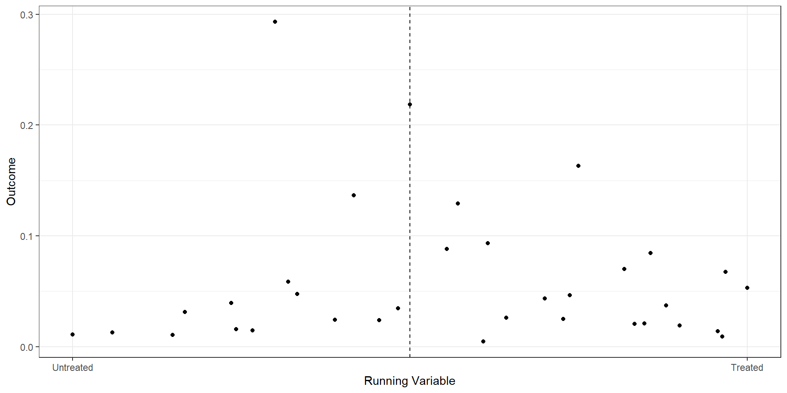

Regression Discontinuity: Part II
Ian McCarthy | Emory University
Outline for Today
- Revisit MA Data with Star Ratings
- Basic RD with Star Ratings
- Manipulation and Balance Checks
- Effects Across Ratings
Medicare Advantage Star Ratings Data
Revisit Data Import
Enrollments and star ratings
Call:
lm(formula = mkt_share ~ factor(Star_Rating), data = ma_2009)
Residuals:
Min 1Q Median 3Q Max
-0.09571 -0.05403 -0.03040 0.01543 0.93279
Coefficients:
Estimate Std. Error t value Pr(>|t|)
(Intercept) 0.025641 0.002587 9.913 < 2e-16 ***
factor(Star_Rating)2 0.024580 0.002992 8.216 < 2e-16 ***
factor(Star_Rating)2.5 0.070140 0.002836 24.728 < 2e-16 ***
factor(Star_Rating)3 0.043291 0.003027 14.301 < 2e-16 ***
factor(Star_Rating)3.5 0.029684 0.003274 9.067 < 2e-16 ***
factor(Star_Rating)4 0.029959 0.003575 8.381 < 2e-16 ***
factor(Star_Rating)4.5 0.029195 0.005283 5.526 3.31e-08 ***
---
Signif. codes: 0 '***' 0.001 '**' 0.01 '*' 0.05 '.' 0.1 ' ' 1
Residual standard error: 0.1013 on 22530 degrees of freedom
Multiple R-squared: 0.04458, Adjusted R-squared: 0.04432
F-statistic: 175.2 on 6 and 22530 DF, p-value: < 2.2e-16Problems
- Certainly not the effect of quality disclosure
- Lots of things unobserved, like
- actual quality
- perceived quality
- prices
Regression Discontinuity with Star Ratings
Note about scores
CMS does more than just an average…
- variance across individual metrics
- high variance is punished, low variance rewarded
- Part C and D scores combined for online reporting (not relevant for 2009)
- For our setting, we’ll just drop contracts that don’t seem to match our strategy very well, but in practice, you’d want to recreate the star ratings much more closely
Data Cleanup
- Focus on ratings around the 4-star cutoffs (running value of 3.75)
# Candidates: partc_score 2 or 2.5 with non-missing raw_rating and partc_score
ma_25star_candidates <- ma_2009 %>%
filter(
!is.na(raw_rating),
!is.na(partc_score),
Star_Rating %in% c(2.0, 2.5)
)
n_candidates_total <- nrow(ma_25star_candidates)
n_candidates_by_score <- ma_25star_candidates %>% count(partc_score)
# Final sample: raw_rating in the range consistent with the star score
ma_25star <- ma_25star_candidates %>%
filter(
raw_rating >= 2,
raw_rating <= 2.5,
(raw_rating >= 2.25 & Star_Rating == 2.5) | (raw_rating < 2.25 & Star_Rating == 2)
)
n_25star_total <- nrow(ma_25star)
n_25star_by_score <- ma_25star %>% count(partc_score)# Candidates: partc_score 2 or 2.5 with non-missing raw_rating and partc_score
candidates_mask = (
ma_2009["raw_rating"].notna()
& ma_2009["Star_Rating"].notna()
& ma_2009["Star_Rating"].isin([2.0, 2.5])
)
ma_25star_candidates = ma_2009.loc[candidates_mask].copy()
n_candidates_total = len(ma_25star_candidates)
n_candidates_by_score = ma_25star_candidates["Star_Rating"].value_counts()
# Final sample: raw_rating in the range consistent with the star score
match_mask = (
ma_25star_candidates["raw_rating"].between(2, 2.5)
& (
((ma_25star_candidates["Star_Rating"] == 2.5) &
(ma_25star_candidates["raw_rating"] >= 2.25))
|
((ma_25star_candidates["Star_Rating"] == 2) &
(ma_25star_candidates["raw_rating"] <= 2.25))
)
)
ma_4star = ma_4star_candidates.loc[match_mask].copy()
n_4star_total = len(ma_25star)
n_4star_by_score = ma_25star["Star_Rating"].value_counts()
print("Obs with partc_score 2 or 2.5:", n_candidates_total)
print(n_candidates_by_score)
print("Obs with raw_rating in the matching range:", n_25star_total)
print(n_4star_by_score)Obs with partc_score 2 or 2.5: 12127 # A tibble: 2 × 2
partc_score n
<dbl> <int>
1 2 4545
2 2.5 7582Obs with raw_rating in the matching range: 6935 # A tibble: 2 × 2
partc_score n
<dbl> <int>
1 2 4303
2 2.5 2632Binned Scatterplot
rd.result <- rdplot(ma_25star$mkt_share, ma_25star$raw_rating,
c=2.25, p=2,
title="RD Plot with Binned Average",
x.label="Running Variable",
y.label="Outcome",
hide = TRUE)
bin.avg <- as_tibble(rd.result$vars_bins)
plot.bin <- bin.avg %>% ggplot(aes(x=rdplot_mean_x,y=rdplot_mean_y)) +
geom_point() + theme_bw() +
geom_vline(aes(xintercept=2.25),linetype='dashed') +
scale_x_continuous(
breaks = c(2, 2.5),
label = c("Untreated", "Treated")
) +
xlab("Running Variable") + ylab("Outcome")#| eval: false
import pandas as pd
import matplotlib.pyplot as plt
from rdrobust import rdplot
# RD plot using mkt_share as outcome and raw_rating as running variable
rd_result = rdplot(
y=ma_25star["mkt_share"].values,
x=ma_25star["raw_rating"].values,
c=2.25,
title="RD Plot with Binned Average",
x_label="Running Variable",
y_label="Outcome",
hide=True # don't show the built-in plot
)
# vars_bins is already a pandas DataFrame in the Python implementation
bin_avg = rd_result.vars_bins
# Recreate the custom plot
fig, ax = plt.subplots()
ax.scatter(
bin_avg["rdplot_mean_x"],
bin_avg["rdplot_mean_y"]
)
ax.axvline(x=2.25, linestyle="--")
ax.set_xticks([2.0, 2.5])
ax.set_xticklabels(["Untreated", "Treated"])
ax.set_xlabel("Running Variable")
ax.set_ylabel("Outcome")
ax.set_title("RD Plot with Binned Average")
plt.tight_layout()
plt.show()
RD from OLS
ma.rd1 <- ma_25star %>%
mutate(score = raw_rating - 2.25,
treat = (score>=0),
window1 = (score>=-.175 & score<=.175),
window2 = (score>=-.125 & score<=.125),
score_treat=score*treat)
star25.1 <- lm(mkt_share ~ score + treat, data=ma.rd1)
star25.2 <- lm(mkt_share ~ score + treat, data= (ma.rd1 %>% filter(window1==TRUE)))
star25.3 <- lm(mkt_share ~ score + treat + score_treat, data= (ma.rd1 %>% filter(window1==TRUE)))
star25.4 <- lm(mkt_share ~ score + treat + score_treat, data= (ma.rd1 %>% filter(window2==TRUE)))
est1 <- as.numeric(star25.1$coef[3])
est2 <- as.numeric(star25.2$coef[3])
est3 <- as.numeric(star25.3$coef[3])
est4 <- as.numeric(star25.4$coef[3])
rows <- tribble(~term, ~ m1, ~ m2, ~ m3 , ~ m4,
'Bandwidth', "0.25", "0.175", "0.175", "0.125")
attr(rows, 'position') <- 7import pandas as pd
import statsmodels.formula.api as smf
# Start from ga_ma_4star DataFrame
ma_rd1 = ma_25star.copy()
ma_rd1["score"] = ma_rd1["raw_rating"] - 2.25
ma_rd1["treat"] = (ma_rd1["score"] >= 0).astype(int)
ma_rd1["window1"] = (ma_rd1["score"].between(-0.175, 0.175))
ma_rd1["window2"] = (ma_rd1["score"].between(-0.125, 0.125))
ma_rd1["score_treat"] = ma_rd1["score"] * ma_rd1["treat"]
# Regressions
star25_1 = smf.ols("mkt_share ~ score + treat", data=ma_rd1).fit()
star25_2 = smf.ols("mkt_share ~ score + treat",
data=ma_rd1[ma_rd1["window1"]]).fit()
star25_3 = smf.ols("mkt_share ~ score + treat + score_treat",
data=ma_rd1[ma_rd1["window1"]]).fit()
star25_4 = smf.ols("mkt_share ~ score + treat + score_treat",
data=ma_rd1[ma_rd1["window2"]]).fit()
# Extract treatment effect (coefficient on treat)
est1 = float(star25_1.params["treat"])
est2 = float(star25_2.params["treat"])
est3 = float(star25_3.params["treat"])
est4 = float(star25_4.params["treat"])
# Bandwidth row (analogous to tribble + attribute)
rows = pd.DataFrame(
{
"term": ["Bandwidth"],
"m1": ["0.25"],
"m2": ["0.175"],
"m3": ["0.175"],
"m4": ["0.125"],
}
)
rows.attrs["position"] = 7modelsummary(list(star25.1, star25.2, star25.3, star25.4),
keep=c("score", "treatTRUE", "score_treat"),
coef_map=c("score"="Raw Score",
"treatTRUE"="Treatment",
"score_treat"="Score x Treat"),
gof_map=c("nobs", "r.squared"),
add_rows=rows)| (1) | (2) | (3) | (4) | |
|---|---|---|---|---|
| Raw Score | 0.010 | -0.277 | -0.141 | -0.204 |
| (0.021) | (0.038) | (0.050) | (0.054) | |
| Treatment | 0.012 | 0.058 | 0.066 | 0.070 |
| (0.006) | (0.008) | (0.008) | (0.010) | |
| Score x Treat | -0.328 | -0.255 | ||
| (0.078) | (0.117) | |||
| Bandwidth | 0.25 | 0.175 | 0.175 | 0.125 |
| Num.Obs. | 6935 | 4605 | 4605 | 4422 |
| R2 | 0.009 | 0.012 | 0.016 | 0.013 |
Interpretation
- OLS on full sample: 1.2% increase in market shares among 4-star plans versus 3.5-star plan
- RD on 0.175 bandwidth: 5.8% increase when imposing constant slopes, 6.6% increase when allowing for differential slopes
- RD on 0.125 bandwidth: 7% increase (again allowing for differential slopes)
Built-in RD packages
from rdrobust import rdrobust
# Fixed bandwidth
est1 = rdrobust(
y=ma_rd1["mkt_share"].values,
x=ma_rd1["score"].values,
c=0,
h=0.125,
p=1,
kernel="uniform",
vce="hc0",
masspoints="off",
)
# Optimal bandwidth (letting rdrobust choose h)
estopt = rdrobust(
y=ma_rd1["mkt_share"].values,
x=ma_rd1["score"].values,
c=0,
p=1,
kernel="uniform",
vce="hc0",
masspoints="off",
)Sharp RD estimates using local polynomial regression.
Number of Obs. 6935
BW type Manual
Kernel Uniform
VCE method HC0
Number of Obs. 4303 2632
Eff. Number of Obs. 4129 293
Order est. (p) 1 1
Order bias (q) 2 2
BW est. (h) 0.125 0.125
BW bias (b) 0.125 0.125
rho (h/b) 1.000 1.000
Unique Obs. 4303 2632
=============================================================================
Method Coef. Std. Err. z P>|z| [ 95% C.I. ]
=============================================================================
Conventional 0.070 0.016 4.253 0.000 [0.038 , 0.102]
Robust - - 6.045 0.000 [0.151 , 0.295]
=============================================================================Sharp RD estimates using local polynomial regression.
Number of Obs. 6935
BW type mserd
Kernel Uniform
VCE method HC0
Number of Obs. 4303 2632
Eff. Number of Obs. 274 41
Order est. (p) 1 1
Order bias (q) 2 2
BW est. (h) 0.033 0.033
BW bias (b) 0.068 0.068
rho (h/b) 0.478 0.478
Unique Obs. 14 22
=============================================================================
Method Coef. Std. Err. z P>|z| [ 95% C.I. ]
=============================================================================
Conventional 0.181 0.053 3.438 0.001 [0.078 , 0.284]
Robust - - 3.741 0.000 [0.096 , 0.306]
=============================================================================Manipulation and Balance Checks
Manipulation of the running variable
from rdrobust import rddensity, rdplotdensity
import matplotlib.pyplot as plt
# Run McCrary-style density test at cutoff 0
dens1 = rddensity(x=ma_rd1["score"].values, c=0)
# Create the density plot object (rdplotdensity returns a matplotlib figure/axes)
densplot = rdplotdensity(dens1, x=ma_rd1["score"].values)
# If you want to explicitly show or tweak:
fig = densplot["fig"]
ax = densplot["ax"]
ax.set_title("Density test around cutoff")
ax.set_xlabel("Score")
ax.set_ylabel("Estimated density")
plt.show()
Manipulation testing using local polynomial density estimation.
Number of obs = 6935
Model = unrestricted
Kernel = triangular
BW method = estimated
VCE method = jackknife
c = 0 Left of c Right of c
Number of obs 4303 2632
Eff. Number of obs 4303 2632
Order est. (p) 2 2
Order bias (q) 3 3
BW est. (h) 0.25 0.25
Method T P > |T|
Robust 55.9095 0
P-values of binomial tests (H0: p=0.5).
Window Length / 2 <c >=c P>|T|
0.028 274 41 0.0000
0.052 322 97 0.0000
0.077 368 168 0.0000
0.102 4123 182 0.0000
0.127 4129 293 0.0000
0.151 4164 293 0.0000
0.176 4184 421 0.0000
0.201 4195 573 0.0000
0.225 4207 573 0.0000
0.250 4303 2632 0.0000Covariate balance
import numpy as np
import pandas as pd
from sklearn.neighbors import NearestNeighbors
import matplotlib.pyplot as plt
# 1. Subset data as in your R code
sub = (
ma_rd1
.loc[
(ma_rd1["window2"]) &
ma_rd1["treat"].notna() &
ma_rd1["premium_partc"].notna() &
ma_rd1["ma_rate"].notna()
]
.copy()
)
covariates = ["premium_partc", "ma_rate"]
X = sub[covariates].to_numpy()
t = sub["treat"].astype(int).to_numpy()
# 2. Mahalanobis nearest-neighbor matching (1:1)
# Estimate covariance matrix of covariates and its inverse
V = np.cov(X, rowvar=False)
V_inv = np.linalg.inv(V)
# Fit NN on controls only
nn = NearestNeighbors(
n_neighbors=1,
metric="mahalanobis",
metric_params={"V": V}
)
nn.fit(X[t == 0])
# For each treated unit, find nearest control
dist, idx = nn.kneighbors(X[t == 1])
control_matches = sub.loc[t == 0].iloc[idx[:, 0]].copy()
treated_matched = sub.loc[t == 1].copy()
# Build matched sample
matched = pd.concat(
[
treated_matched.reset_index(drop=True),
control_matches.reset_index(drop=True)
],
axis=0
).reset_index(drop=True)
matched["treat"] = np.r_[np.ones(len(treated_matched)), np.zeros(len(control_matches))]
# 3. Function for standardized mean differences (SMD)
def smd(df, var, treat_col="treat"):
g1 = df[df[treat_col] == 1][var]
g0 = df[df[treat_col] == 0][var]
m1, m0 = g1.mean(), g0.mean()
s = np.sqrt(0.5 * (g1.var(ddof=1) + g0.var(ddof=1)))
return (m1 - m0) / s
# SMDs before and after matching
smd_before = [smd(sub, v) for v in covariates]
smd_after = [smd(matched, v) for v in covariates]
# 4. “Love plot” (absolute SMDs)
fig, ax = plt.subplots()
y_pos = np.arange(len(covariates))
ax.scatter(np.abs(smd_before), y_pos, marker="o", label="Unmatched")
ax.scatter(np.abs(smd_after), y_pos, marker="s", label="Matched")
ax.set_yticks(y_pos)
ax.set_yticklabels(covariates)
ax.set_xlabel("Absolute standardized mean difference")
ax.axvline(0.1, linestyle="--") # common reference line
ax.legend()
ax.invert_yaxis() # to mimic cobalt’s ordering
plt.tight_layout()
plt.show()
Effects across Rating Thresholds
Effects for 2.5 versus 2.0 Stars
ma.rd225 <- ma_2009 %>%
filter(Star_Rating==2 | Star_Rating==2.5) %>%
mutate(score = raw_rating - 2.25,
treat = (score>=0),
window1 = (score>=-.175 & score<=.175),
window2 = (score>=-.125 & score<=.125),
score_treat=score*treat)
est225 <- rdrobust(y=ma.rd225$mkt_share, x=ma.rd225$score, c=0,
h=0.125, p=1, kernel="uniform", vce="hc0",
masspoints="off")import pandas as pd
from py_rdpackages import rdrobust # wrapper around rdrobust in R
# starting from ma_2009 as a pandas DataFrame
ma_rd225 = (
ma_2009
.loc[ma_2009["Star_Rating"].isin([2, 2.5])]
.assign(
score=lambda d: d["raw_rating"] - 2.25,
treat=lambda d: (d["score"] >= 0).astype(int),
window1=lambda d: d["score"].between(-0.175, 0.175),
window2=lambda d: d["score"].between(-0.125, 0.125),
score_treat=lambda d: d["score"] * d["treat"],
)
)
est225 = rdrobust(
y=ma_rd225["mkt_share"].to_numpy(),
x=ma_rd225["score"].to_numpy(),
c=0,
h=0.125,
p=1,
kernel="uniform", # if this errors, try kernel="uni"
vce="hc0",
masspoints="off"
)Sharp RD estimates using local polynomial regression.
Number of Obs. 12127
BW type Manual
Kernel Uniform
VCE method HC0
Number of Obs. 4545 7582
Eff. Number of Obs. 4129 293
Order est. (p) 1 1
Order bias (q) 2 2
BW est. (h) 0.125 0.125
BW bias (b) 0.125 0.125
rho (h/b) 1.000 1.000
=============================================================================
Method Coef. Std. Err. z P>|z| [ 95% C.I. ]
=============================================================================
Conventional 0.070 0.016 4.253 0.000 [0.038 , 0.102]
Robust - - 6.045 0.000 [0.151 , 0.295]
=============================================================================Effects for 3.0 versus 2.5 Stars
ma.rd275 <- ma_2009 %>%
filter(Star_Rating==2.5 | Star_Rating==3) %>%
mutate(score = raw_rating - 2.75,
treat = (score>=0),
window1 = (score>=-.175 & score<=.175),
window2 = (score>=-.125 & score<=.125),
score_treat=score*treat)
est275 <- rdrobust(y=ma.rd275$mkt_share, x=ma.rd275$score, c=0,
h=0.125, p=1, kernel="uniform", vce="hc0",
masspoints="off")# assuming ma_2009 is a pandas DataFrame and rdrobust is already imported
ma_rd275 = (
ma_2009
.loc[ma_2009["Star_Rating"].isin([2.5, 3])]
.assign(
score=lambda d: d["raw_rating"] - 2.75,
treat=lambda d: (d["score"] >= 0).astype(int),
window1=lambda d: d["score"].between(-0.175, 0.175),
window2=lambda d: d["score"].between(-0.125, 0.125),
score_treat=lambda d: d["score"] * d["treat"],
)
)
est275 = rdrobust(
y=ma_rd275["mkt_share"].to_numpy(),
x=ma_rd275["score"].to_numpy(),
c=0,
h=0.125,
p=1,
kernel="uniform", # or "uni" if required by your wrapper
vce="hc0",
masspoints="off"
)Sharp RD estimates using local polynomial regression.
Number of Obs. 11735
BW type Manual
Kernel Uniform
VCE method HC0
Number of Obs. 7582 4153
Eff. Number of Obs. 313 1869
Order est. (p) 1 1
Order bias (q) 2 2
BW est. (h) 0.125 0.125
BW bias (b) 0.125 0.125
rho (h/b) 1.000 1.000
=============================================================================
Method Coef. Std. Err. z P>|z| [ 95% C.I. ]
=============================================================================
Conventional 0.082 0.015 5.507 0.000 [0.053 , 0.111]
Robust - - 1.448 0.148 [-0.023 , 0.151]
=============================================================================Effects for 3.5 versus 3.0 Stars
ma.rd325 <- ma_2009 %>%
filter(Star_Rating==3 | Star_Rating==3.5) %>%
mutate(score = raw_rating - 3.25,
treat = (score>=0),
window1 = (score>=-.175 & score<=.175),
window2 = (score>=-.125 & score<=.125),
score_treat=score*treat)
est325 <- rdrobust(y=ma.rd325$mkt_share, x=ma.rd325$score, c=0,
h=0.125, p=1, kernel="uniform", vce="hc0",
masspoints="off")# assuming ma_2009 is a pandas DataFrame and rdrobust is already imported
ma_rd325 = (
ma_2009
.loc[ma_2009["Star_Rating"].isin([3, 3.5])]
.assign(
score=lambda d: d["raw_rating"] - 3.25,
treat=lambda d: (d["score"] >= 0).astype(int),
window1=lambda d: d["score"].between(-0.175, 0.175),
window2=lambda d: d["score"].between(-0.125, 0.125),
score_treat=lambda d: d["score"] * d["treat"],
)
)
est325 = rdrobust(
y=ma_rd325["mkt_share"].to_numpy(),
x=ma_rd325["score"].to_numpy(),
c=0,
h=0.125,
p=1,
kernel="uniform", # or "uni" depending on the Python wrapper
vce="hc0",
masspoints="off"
)Sharp RD estimates using local polynomial regression.
Number of Obs. 6704
BW type Manual
Kernel Uniform
VCE method HC0
Number of Obs. 4635 2069
Eff. Number of Obs. 1020 784
Order est. (p) 1 1
Order bias (q) 2 2
BW est. (h) 0.125 0.125
BW bias (b) 0.125 0.125
rho (h/b) 1.000 1.000
=============================================================================
Method Coef. Std. Err. z P>|z| [ 95% C.I. ]
=============================================================================
Conventional 0.007 0.009 0.744 0.457 [-0.011 , 0.025]
Robust - - 5.536 0.000 [0.050 , 0.105]
=============================================================================Effects for 4 versus 3.5 Stars
ma.rd375 <- ma_2009 %>%
filter(Star_Rating==3.5 | Star_Rating==4) %>%
mutate(score = raw_rating - 3.75,
treat = (score>=0),
window1 = (score>=-.175 & score<=.175),
window2 = (score>=-.125 & score<=.125),
score_treat=score*treat)
est375 <- rdrobust(y=ma.rd375$mkt_share, x=ma.rd375$score, c=0,
h=0.125, p=1, kernel="uniform", vce="hc0",
masspoints="off")# assuming ma_2009 is a pandas DataFrame and rdrobust is already imported
ma_rd375 = (
ma_2009
.loc[ma_2009["Star_Rating"].isin([3.5, 4])]
.assign(
score=lambda d: d["raw_rating"] - 3.75,
treat=lambda d: (d["score"] >= 0).astype(int),
window1=lambda d: d["score"].between(-0.175, 0.175),
window2=lambda d: d["score"].between(-0.125, 0.125),
score_treat=lambda d: d["score"] * d["treat"],
)
)
est375 = rdrobust(
y=ma_rd375["mkt_share"].to_numpy(),
x=ma_rd375["score"].to_numpy(),
c=0,
h=0.125,
p=1,
kernel="uniform", # or "uni" if that's the accepted alias
vce="hc0",
masspoints="off"
)Sharp RD estimates using local polynomial regression.
Number of Obs. 4238
BW type Manual
Kernel Uniform
VCE method HC0
Number of Obs. 3179 1059
Eff. Number of Obs. 755 737
Order est. (p) 1 1
Order bias (q) 2 2
BW est. (h) 0.125 0.125
BW bias (b) 0.125 0.125
rho (h/b) 1.000 1.000
=============================================================================
Method Coef. Std. Err. z P>|z| [ 95% C.I. ]
=============================================================================
Conventional -0.019 0.007 -2.663 0.008 [-0.033 , -0.005]
Robust - - -2.217 0.027 [-0.053 , -0.003]
=============================================================================RD with discrete variables
- Allow for fewer mass points
- Assume random assignment between mass points
- Inference using Fisher’s exact test